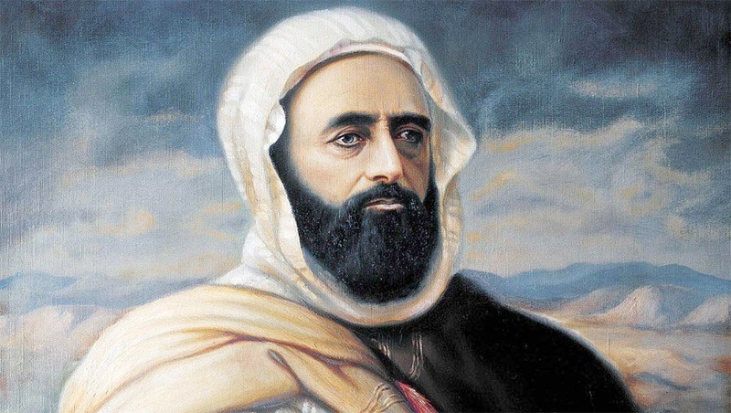

El Amir Abdelkader

Introduction
l'Emir Abdelkader était un chef militaire , homme d'Etat , philosophe et théologien musulman. Il est surtout connu pour avoir dirigé la résistance contre la colonisation française en Algérie au XlXe siècle. Il est également admiré pour ses valeurs humaines , son sens de la justice et son engagement pour la tolérance religieuse.
Jeunesse et formation
Né dans une famille religieuse influente , Abdelkader reçut une éducation approfondie dans les sciences islamiques , la littérature , la poésie , et l'équition , IL accompagna son père en pèleringe à la Mecque , où il approfondit sa foi et prit conscience des enjeux politiques du monde musulman.
La résistance contre la colonisation
En 1832, à l’âge de 24 ans, il fut proclamé émir par les tribus de l’ouest algérien pour organiser la résistance face à l’invasion française. Il réussit à unir plusieurs tribus et à mettre en place un État structuré avec une administration, une armée et un système économique.
Principales batailles
Capitulation et exil
En 1847, confronté à un manque de ressources et de soutiens, Abdelkader se rend aux autorités françaises. Malgré la promesse de l’exiler vers l’Orient, il est emprisonné en France pendant quatre ans. Il est finalement libéré par Napoléon III et s’installe à Damas.
Vie à Damas
À Damas, il se consacre à l’étude, à l’écriture et à la spiritualité. En 1860, il protège des milliers de chrétiens durant des massacres, ce qui lui vaut une reconnaissance internationale, tant dans le monde musulman qu’en Europe.
Réalisations majeures
Mort et héritage
L’Émir Abdelkader meurt à Damas en 1883. Ses restes sont rapatriés en Algérie en 1965. Il demeure un symbole de la résistance algérienne, un modèle de courage, de sagesse et de tolérance. De nombreux lieux et institutions portent son nom, comme la ville d’El Emir Abdelkader ou l’Université Emir Abdelkader à Constantine.
My instagram